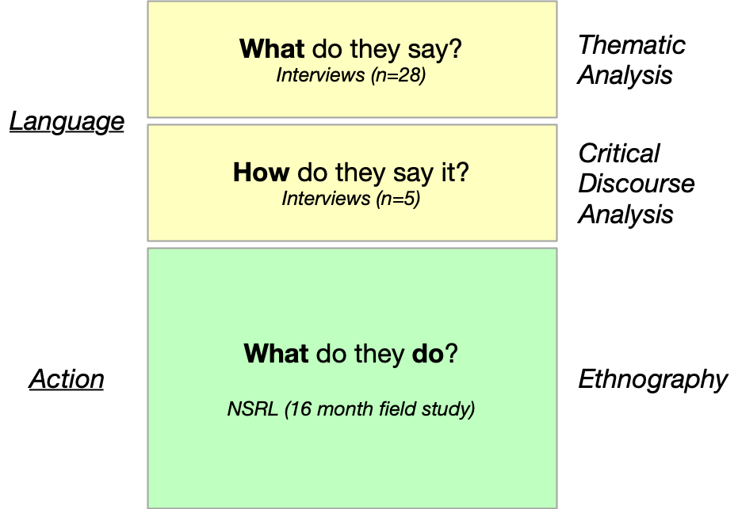

Legibility Machines
Archival Appraisal and the
Genealogies of Use
Ed Summers
University of Maryland
edsu@umd.edu
Expressions of appraisal value in web archives are intrinsically tied to the ways in which records are used.
Overview
- Background
- Research Question
- Methods
- Findings
- Conclusion
Appraisal
The process of identifying materials offered to an archives that have sufficient value to be accessioned.
Society of American Archivists (2004).
A Glossary of Archival and Records Terminology.
Sociotechnical
- How do the tools that are being used to archive the web shape what is collected?
- How does what we want to collect from the web shape the tools we use to do it?
Sociotechnical Archives
- Hedstrom, M. (1991). Understanding electronic incunabula: A framework for research on electronic records. The American Archivist, 54(3), 334–354.
- Hedstrom, M. (2002). Archives, memory, and interfaces with the past. Archival Science, 2(12), 21–43.
Provenance
Practice
Evidence
Ben-David, A. and Amram, A. (2018). The Internet Archive and the sociotechnical construction of historical facts. Internet Histories, 2(1-2), 179–201.
Acker, A. and Chalet, M. (2020). The weaponization of web archives: Data craft and COVID-19 publics. The Harvard-Kennedy School Misinformation Review.
RQ1:
How are archivists deciding what to collect from the web?
RQ2:
How does our understanding of what constitutes a web archive relate to the practice of appraisal?
Between-Method Triangulation
"The Customer"

Use: The NSRL wanted to collect popular software for use in "deNISTing". But the metric of popularlity escaped measurement as it was obscured by platform logics, realtime changes, and software updates.
Misuse: The NSRL is a dual-use technology where its openness could be used to identify users of software and in some cases target individuals for political persecution.
Disuse: Apparently useless software was collected, as part of a set of activities that disciplined the field of digital preservation with law enforcement, defense and intelligence practices.
Cox, R. (1994). The Documentation Strategy and Archival Appraisal Principles: A Different Perspective. Archivaria, 38, 11-36.
Haraway, D. (1988). Situated knowledges: The science question in feminism and the privilege of partial perspective. Feminist Studies, 14(3), pp. 575-599.
What's the use...of my Research?
- Appraisal and Use Framework
- Use of Web Archives
- Web Archive Architectures
- Longue Durée of Data
- Use of Use as Method
Study 1: "What" Appraisal
- 28 semi-structured interviews with practitioners from umich.edu conference
- Inductive Thematic Analysis: transcripts, post interview notes, coding, categorizing
- Crawl modalities
- Information Structures
- Time & Money
- Tools & Improvisation
Study 2: "How" Appraisal
- Analyze
- Critical Discourse Analysis
- Gee's 7 Building Tasks: relationships, identities, politics
- Findings: Hierarchy, Community of Practice, Trust, Positionality
- Web Architecture
Study 3: Action Appraisal
- Ethnography
- Grounded Theory: Charmaz
- Jottings and Field notes
- Interview transcripts
- Documentary Analysis: Slack, Git, Wiki, Bugzilla, news
- Coding (108), Categorizing, Memoing, Vignettes